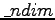

Next: 7.4 Parallelization issues
Up: 7 Performance issues (PWscf)
Previous: 7.2 Memory requirements
Contents
A typical pw.x run will require an amount of temporary disk
space in the order of O
double precision complex numbers:
O = Nk . M . N + q . Nr1 . Nr2 . Nr3
where
q = 2 . mixing
(number of iterations used in
self-consistency, default value = 8
) if disk_io is set to
'high' or not specified;
q = 0
if disk_io='low' or 'minimal'.
Paolo Giannozzi
2008-05-14